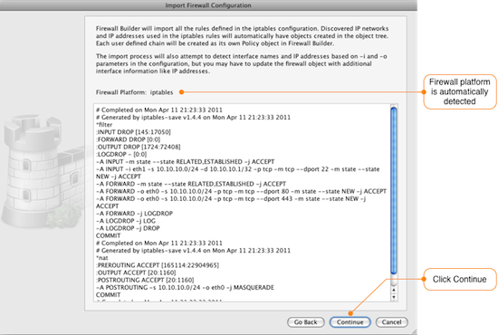
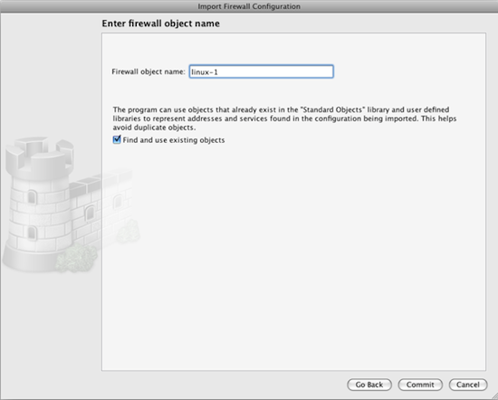
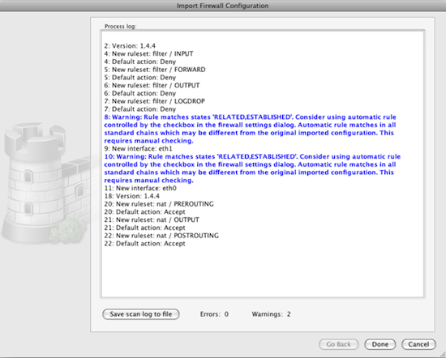

The next window shows a preview of the configuration file that will be imported and the type of firewall that Firewall Builder has detected it to be.
Next you need to enter a name for the firewall. This is the name that will be used in Firewall Builder to refer to the firewall after it is imported. When you click the Commit button the configuration data will be read.
By default, Firewall Builder attempts to detect if there are items, like IP addresses, used in the rules that match existing items in the object tree. If there is a match the existing item is used, if there is no match a new object is created. This feature can be disabled by unchecking the box next to "Find an use existing objects" which will result in objects being created for evry item used in the imported rules regardless of whether it already exists in the object tree or not.
After the import is complete, Firewall Builder displays a log showing all the actions that were taken during the import. Warning messages are displayed in blue font and Error messages are displayed in red.
The program tries to interpret the configuration file rule by rule and recreates the equivalent rule in Firewall Builder. Note that rules imported into Firewall Builder may not always be optimized since features like defining multiple source and/or destinations are supported by Firewall Builder, but not by iptables.
The progress window displays warning and error messages, if any, as well as some diagnostics that shows network and service objects created in the process.
As you can see from the import process log, Firewall Builder detected that there are rules in the iptables configuration that allow RELATED and ESTABLISHED traffic through the firewall. This behavior can be controlled by a setting in Firewall Builder, so a warning message is shown.
Click the Done button to complete the firewall import. Next we will go through some common post-import actions.